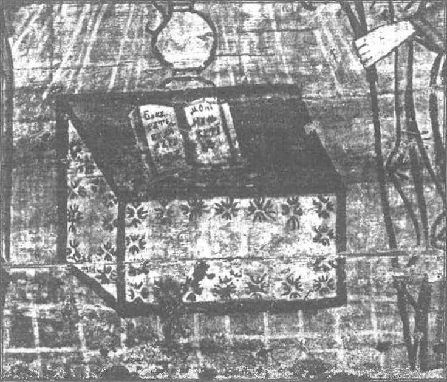

Întâmpinarea, plină de dorința sinceră a unei lămuriri, pe care colegul meu de învățământ, d. prof. Frollo, a publicat-o în această foaie în apărarea românilor catolici, ne dă prilejul să revenim asupra unor chestiuni pe cari noi, la „Cuvântul”, le socotim drept fundamentale.
D. Frollo se întreabă surprins și, oarecum, îndurerat: de ce și de unde îndârjirea unor cercuri ortodoxe împotriva românilor de confesiune romano-catolică? Adică cum, un catolic nu poate fi un „bun român”? Și nici nu mai așteaptă răspunsul; căci dreptatea atitudinei d-sale îi apare ca evidentă.
În adevăr, oricât de paradoxal s'ar părea, toți românii catolici sunt în măsură a răspunde victorios la întrebarea dacă un catolic poate fi un „bun român”. Nici unul însă nu se oprește la chestiunea mai simplă — dar cea revelantă — dacă un catolic poate fi „român”. Et pour cause! Căci a fi „bun român” este, sub raportul etnic și spiritual, mai puțin decât a fi „român” pur și simplu. Dar ceea ce în adevăr atinge miezul problemei noastre, nu e chestiunea bunului român, ci a românului.
Să ne lămurim. „Bun român” este o noțiune foarte vagă, foarte complicată și foarte confuză. Ea închide un element de valorificare morală, unul de încadrare politică, și în ultimă analiză, unul de apartenență spirituală.
Bercu Solomon, din târg dela Pașcani, care muncește de dimineață până'n noapte, care își plătește regulat birurile și e respectuos de legile țării, care a fost în războiu și și-a împlinit însărcinările cu convingerea fermă că e dator să o facă, este desigur un „bun român”.
Samuel Micu, cărturarul ardelean care a mers după învățătură la Roma, a adus de acolo dovada latinității noastre și a contribuit ca nimeni altul la definirea, la delimitarea conștiinței noastre naționale, este iarăși un „bun român”. Și tot așa, pentru a ne ține în istorie: Ion Brătianu-tatăl care a construit armătura statului românesc modern și a urmărit, cu o putere vie încă în copiii lui, înstăpânirea românilor asupra statului și avuției din cuprinsul lui, a fost un „bun român”.
„Buni români” toți acești trei, fără îndoială. Dar și români? Aci e nodul chestiunii. Să nu mai vorbim de Bercu Solomon, săracul, — deși poate cel mai patetic dintre toți. La el situația e clară: „bun român”, adică: bun cetățean al statului român, în cea mai largă accepțiune a cuvântului. Pentru asta însă, nu e nevoe să fii numai decât român, nu? După cum nu e Bercu Solomon; deși nu este exclus, ca acesta să fi murit in războiu, cu liniștea detașată și lipsită de retorism a celor cari au conștiința împlinirei unei datorii față de o realitate colectivă care îi înglobează și îi depășește.
Cazul lui Samuel Micu e ceva mai complicat. Călugărul acesta papistaș este unul din ctitorii conștiinței românești. S'ar putea oare pune la îndoială românismul lui? Și totuș, se poate. Eu nu vreau să cercetez aci dacă Samuel Micu a fost sau nu român cu adevărat. Cred însă să pot afirma că nu e nevoe să fii român, ca să faci ce a făcut Micu.
Iată, mai anul trecut ne-a cercetat aci în București un englez, colonelul Wedgwood. Wedgwood este un englez de baștină. Neamul lui fabrică porțelanuri de vre-o două sute de ani. Colonelul nostru este însă… ziarist. Poate că puțini oameni au făcut pentru conștiința etnică și pentru naționalismul evreu, cât a realizat Wedgwood, acest stăruitor și îndărătnic militant al sionismului. Care e însă situația lui?
Dacă ar fi locuit în Palestina, ar fi fost, desigur, un „bun evreu”. Este el însă pentru asta și evreu? Evident, nu!
„Iată, deci, cum cazul lui Samuel Micu devine irevelant.
Mai rămâne cel al lui Ion Brătianu-tatăl. Exemplul colonelului Wedgwood este și aci hotărîtor. S'ar putea totuș ca el să nu epuizeze fondul chestiunii; de-aceea vom insista.
E incontestabil că Ion Brătianu a voit să fe român. A voi să fii român nu însemnează însă și a fi român. A fi român, însemnează o stare naturală, o formulă de echilibru a existenței din care decurg, prin însăș desfășurarea vieții, anumite forme. Un bob de grâu, dacă îl îngropi în pământ, la umezeală, încolțește și dă fir. Un anumit fir, cu o anumită desvoltare, necesară, mai dinainte determinată de însăș structura bobului de grâu. Așa se petrece și cu „românia” noastră. A fi român însemnează a avea o anumită plămadă, din care decurg cu necesitate absolută anumite atitudini și gesturi. Voința noastră nu are nimic de zis în această împrejurare; pentru că noi nu ne putem depăși în chip normal pe noi înșine decât încetând a mai fi noi înșine. Prin urmare: Ion Brătianu-tatăl a construit statul nostru modern. Este acest stat în adevăr românesc? Dacă da, atunci, desigur, Brătianu a fost în adevăr român. Dar dacă statul nostru modern nu e cu adevărat românesc? Atunci lucrurile se schimbă: Ion Brătianu a fost „bun român”, adică a avut cele mai bune intențiuni pentru poporul și statul nostru, — dar „român” nu a fost. După cum nu e grâu sămânța care sfârșește prin a purta un spic de orz. Iată deci adevăratul cadru al problemei. Catolicii români revendică pentru ei calitatea de a fi „buni români”. Es ist zu viel des Guten. Noi ne-am mulțumi numai cu răspunsuri la o întrebare… mai modestă: Buni români puteți fi și, desigur, sunteți. Sunteți însă și români? O vom lămuri tot noi.
(30 Octombrie 1930)
Dacă Părintele Russu nu ar fi astăzi episcop, ci ar continua să conducă la Blaj foaia greco-catolică „Unirea”, este sigur că articolul meu de ieri și în genere toate considerațiunile cari vor urma pe această temă ar fi căpătat o întâmpinare cu deosebire virulentă. Așa, avem cel puțin certitudinea că o discuție, dacă va fi, se va păstra in limitele unui respect reciproc și a unei bune credințe cari singure pot înlesni, dacă nu un acord — cel puțin o lămurire cinstită a punctelor de vedere cari stau în prezență.
Eu recunosc că tema e extrem de delicată. Și că pentru niște oameni ca rumânii catolicizanți, catolici de-a binelea, sau numai „uniți” cari sunt încredințați nu numai că ei sunt români cu adevărat, dar că reprezintă forma eminentă a românismului, și cari consideră absența noastră dela închinarea față de Roma drept una din cauzele stării noastre de înapoiere, iar „unirea” ca una din binefacerile cu cari Dumnezeu a învrednicit neamul nostru, — afirmația care se desprinde deja din rândurile mele (că anume ar fi o antinomie sau cel puțin o incompatibilitate între calitatea de român și cea de catolic) poate apărea drept iritantă. Cum însă nu scriu ca să irit, și cu atât mai puțin ca să insult pe cineva, ci numai ca să lămuresc, nu pot evita această discuție pe care o socotesc ca purtând asupra uneia din cele mai de seamă probleme ale spiritualității românești; cu atât mai mult cu cât discuția îmi e oferită de catolici.
Și revenind la… berbecii noștri; pentru a strânge mai deaproape problema vom repeta cele ce, credem, am stabilit: că anume poate fi cineva „bun român” fără ca neapărat să fie „român”; calitatea aceasta de bun român fiind oarecum exterioară românismului și neindicând decât o atitudine, să zicem, amicală, afirmativă față de realitatea românească.
De aci urmează, însă, că romano-catolicii nu dovedesc nimic în legătură cu tema pusă în discuție, atunci când stabilesc că un catolic poate fi și „bun român”. Pentru a-și justifica situația de români și catolici, și mai ales pentru a crea o îndreptățire atitudinii lor categoric proseliste, ei ar trebui să arate că poți fi catolic și român. Asta însă, e mai greu de dovedit. Și iată de ce: A fi român, turc sau englez însemnează a sta într'un raport de apartenență și participare în acelaș timp, față de o realitate colectivă, națiunea; care te depășește, dar care constitue însăși rațiunea suficientă a existenței tale ca român, turc sau englez. Realitatea aceasta colectivă, este, după natura ei, o unitate spirituală; iar după structura ei organică, o comunitate de iubire.
(Formal — mai exact: fenomenologic, structural, — există o isbitoare asemănare între națiune și biserica creștină). Așa fiind, nu poate fi cineva român, de pildă, decât dacă participă în chip efectiv la „românia”, — dacă, cu alte cuvinte, realizează în concret, în individual, structura organică spirituală a cărei depozitară în esențial e națiunea noastră. Națiunile sunt însă realități istorice. Ele iau naștere în spațiu și în timp; și sunt condiționate, ca atare, de tot ceea ce cade sub categoria individuației. Atitudinea unui popor față de Dumnezeu, felul în care el trăește nu numai legătura lui cu Divinitatea, dar chiar Divinitatea însăș, face parte integrantă din structura intimă a națiunii.
Eu nu ignorez că, în această privință, există o cunoștință revelată din a cărei codificare ies dogmele. Dar nu e mai puțin adevărat că deși dogmele sunt, în ele înșile, adevăruri neschimbătoare, absolute, — există totuș o istorie a dogmelor; ceea ce însemnează că adevărul revelat poate fi deformat prin presiunea realităților istorice, De aci și existența diferitelor religii și a diferitelor confesiuni înlăuntrul unei aceleași religii.
Noi nu discutăm aci chestiuni de religii, ci de etnicitate. Așa fiind, putem să lăsăm la o parte întrebarea dacă există în genere cunoștință revelată nealterată de intervenția elementelor istorice, sau dacă între catolicism și ortodoxie prima sau cea din urmă reprezintă adevăratul creștinism.
Ne e suficient, pentru lămurirea problemei în desbatere, să constatăm că există catolicism și ortodoxie ca realități istorice distincte, întâiu; și al doilea, că în chip natural, istoricește, românii sunt, în marea lor majoritate — deci în normalitatea lor — prezentă și trecută ortodocși. Cu aceasta însă chestiunea e strânsă pe ultima ei poziție:
De îndată ce confesiunea, realitate istorică, face parte integrantă din cealaltă realitate istorică, națiunea, urmează că în definiția noțiunii „român” și în constituția realității „român” intră ca notă, respectiv componentă, esențială, ortodoxia. A fi român, nu „bun român”, ci român pur și simplu, însemnează a fi și ortodox. În acelaș fel în care, de pildă, animalul „cal” este și „patruped”.
Iată însă, unii români găsesc că ortodoxia nu e bună; și trec la catolicism. Este evident că avem a face cu o operație de grefă, de altoire. Întrebarea este: în momentul în care am devenit eu catolic, mai sunt și român? Cu alte cuvinte: a atins această operație de înlocuire a ortodoxiei prin catolicism o componentă esențială, sau numai una accidentală a „româniei”? Sau mai simplu și mai general: este confesiunea în genere, o notă esențială a națiunii sau nu?
Iată întrebare de care depinde soluția antinomiei dintre universalismul romano-catolic și particularismul național.
(31 Octombrie 1930)
Cineva îmi atrage atenția asupra inactualității temei pe care am luat-o în desbatere. Inactuală? E numai o impresie. Și în ori ce caz, o judecată nu poate fi formulată acum asupra chestiunii, atâta vreme cât nu s'au văzut ultimele consecințe.
Aș conceda altceva. Că discuția e prea teoretică, — prea abstractă. Asta se poate. Dar nu e nimic de făcut. Sunt cazuri în care tema ne impune și nivelul și maniera desbaterii. Și acesta e un asemenea caz.
Criteriul de selecțiune a problemelor pe cari le luăm în cercetare este însemnătatea lor pentru așezarea națiunii și statului românesc, și acuitatea lor. Cari în ori ce caz nu pot fi puse la îndoială astăzi, când, incontestabil, asistăm la o bine nutrită ofensivă catolică.
Personal, această ofensivă nu mă îngrijorează. Căci trăind de multă vreme în contact intim cu structurile realităților colective, îmi dau seama de incompatibilitatea funciară care există între catolicism și românie. Catolicii nu o văd. Și nici nu-i interesează. Căci pentru ei o asemenea incompatibilitate nici nu există. Orientată cu mult prea mult înspre ordinea seculară, interpretând „primatul spiritualului” ca un drept al papei de a patrona în chip direct tot ceea ce se petrece în „veac”, biserica romano-catolică își regulează indulgența sau implacabilitatea mai adesea după interesele ei politice. Felul cum trăiește cineva, legătura dintre om și Dumnezeu, GRADUL în care o trăiește, sunt lucruri de a doua mână. Important este adesiunea formală la domnia Sfântului Părinte; și supunerea la autoritatea bisericii. Încolo, — fiecare cum îl ajută Dumnezeu. D-ta cetitorule, eu, sau altul ca noi suntem sceptici asupra autenticității conținutului romano-catolic de credință a unui Zulus, de pildă. Misionarul catolic, nu! Și nici Roma, cu toată amețitoarea ei capacitate de a despica firul de păr în patru în discuțiile teologice. În această voită lipsă de spirit critic și de preciziune stă, de altfel, și puterea acțiunii ei proselitiste.
Dar aci stă și slăbiciunea ei. Căci pornită să cucerească inși, ea riscă să neglijeze și să piardă suflete. Neținând seamă de elementul viu, concret, istoric, catolicismul se poate aventura să facă prozeliți peste tot pământul, dat fiind că pentru el nu există condițiuni istorice de realizare. Ori ce om poate deveni catolic. Iată convingerea inebranlabilă a Romei.
Poate însă în adevăr? S'a observat că protestantismul a făcut ravagii înlăuntrul bisericii romano-catolice; dar că a fost incapabil să realizeze cel mai mic progres în țările ortodoxe. Explicația nu stă în precelența ortodoxiei, cum le-ar plăcea unora din noi să creadă; ci într'un fapt mult mai simplu: în faptul că biserica romano-catolică înglobase în sânul ei populații și națiuni cari structural nu se puteau încadra în doctrina catolică; — și cari mai curând sau mai târziu trebuiau să se desprindă de ea, căutându-și formele firești de viață religioasă. Căci oricât ar trece biserica romană cu vederea tendințele particulariste — ce formă mai necatolică voiți, decât franciscanismul de pildă, care totuș e tolerat, ba chiar pronat, în catolicism! — realitățile spirituale sfârșesc uneori prin a depăși această biserică; formula lor fiind alta.
Faptul acesta însă, că înlăuntrul catolicismului s'a ivit larga mișcare de reformă a protestantismului, formează dovada peremptorie că o confesiune nu se poate întinde la infinit; ci că, dimpotrivă, ea își găsește limite de expansiune în anumite împrejurări locale, istorice, cari determină structuri fundamental deosebite — și deci — incompatibilități.
Asemenea incompatibilități structurale există însă, după convingerea mea, între catolicism și românie. Căci catolicism și ortodoxie nu sunt numai confesiuni, prezintând anumite deosebiri dogmatice și culturale, ci două valorificări fundamental deosebite ale existenței în genere. Diferențele dogmatice sunt, aș putea spune, punctele cele mai puțin deosebitoare. Marea neînțelegere, incompatibilitatea, impenetrabilitatea categorică dintre catolicism și ortodoxie își au originile în altă parte: în structurile spirituale istorice, concrete, cari le formează suportul, înlăuntrul cărora ele se realizează.

Nu e deloc o întâmplare, deci, că răsăritul Europei este ortodox, iar sud-vestul ei, catolic. Confesiunea face parte integrantă și e, oarecum determinată de plămada sufletească a regiunilor respective, Acesta e adevărul fundamental în problema națiunii și religiei: ele sunt realități corelative.
Suntem, ca atare, ortodocși pentru că suntem români, și suntem români pentru că suntem ortodocși.
Să devenim catolici? Ca să devenim catolici, ar trebui să ne transformăm astfel sufletește în cât să putem realiza catolicismul. Transformarea aceasta însemnează însă: renunțarea la istoria noastră și la structura noastră spirituală. Cu alte cuvinte: renunțarea la românie.
Aci nu există o a treia poziție: sau rămâi român — și atunci catolicismul tău nu e o realitate; sau devii catolic și atunci nu mai ești român. Cine crede altfel, se înșală. Realitățile sunt aci, — și ne putem controla.
…Iată de ce nu mi-e teamă de noua ofensivă catolică.
(5 Noembrie 1930)Era natural ca, atunci când m'am hotărât să accept discuția provocată de românii catolici pe o temă așa de delicată — dar și de fundamentală importanță — să mă aștept la o replică. Cum însă îi știu pe catolicizanții noștri oameni de cultură și de dialectică, nu am crezut nici odată că cel dintâiu răspuns care îmi va veni va fi jalnic de confuz și de puțin îndemânatec, Și totuș așa s'a întâmplat. De unde, iată-mă în necesitatea ca — așteptând ceva mai de seamă — să desbat obiecțiuni cari, între oameni cu simțul ideilor și al argumentării, nici nu ar fi trebuit să fie ridicare. O fac însă, pentru că acest moment polemic se mișcă totuș pe linia considerațiunilor mele.
Obiecțiunea celor cari ar vrea să fie preopinenții mei este simplă: se înșiră o serie de români de seamă cari au fost uniți sau chiar catolici și mi se pune, victorios, întrebarea: ăștia ce sunt? nu sunt români? Ba, să presupunem, sunt români. Ei și? Ce mi sa dovedit cu asta? Că poți să fii și catolic și român în acelaș timp? Nu. Pentru că dacă eu isbutesc a stabili cu precizie suficientă că cutare ins, care-și zice catolic, e în adevăr român, am datoria să-mi pun imediat întrebarea: dar e și catolic?
Căci, la urma urmelor, ce însemnează a fi catolic, sau a fi român? Este de ajuns a te numi Ionescu și a avea act de naționalitate românească pentru a fi român; ori a fi înscris în controalele bisericii romano sau greco-catolice pentru a fi catolic? Evident, nu.
Sau poate că este deajuns a voi să fii român sau să fii catolic, pentru ca să și fii una sau alta?! Mă rog, lucrurile astea trebuesc totuș odată lămurite! Să precizăm: eu trăiesc în țara românească; m'am născut din părinți români; sunt identificat, conștient sau fără să-mi dau seama, cu toată istoria și tradiția noastră; și mai sunt, să zicem, mădular al bisericii ortodoxe. Reflectând însă asupra diferitelor confesiuni, eu ajung la încheierea că, de pildă, catolicismul e superior ortodoxiei. Și, connsequent, trec la catolicism. Însemnează asta că eu sunt catolic? Cum adică? Apartenența efectivă la o categorie naturală să fie realizabilă printr'un act de voință? Atunci când eu am din naștere părul negru, e suficient să vreau a-l avea roșu, pentru ca să-l și am?
Augustin Bunea, mi se spune, a fost român și a fost catolic. Ergo! Dați-mi voe să ridic din umeri: să zicem că a fost român; de unde știți că a fost și catolic? Pentru că v'a spus-o el? Pentru că a crezut-o el? Pentru că a mărturisit-o el? Pentru că a vrut-o el? Asta nu este deajuns.
Ce vreau să spun cu asta? Iată răspunsul meu; sub forma unei probleme pe care am mai pus-o odată, ardelenilor, într'o conferință la Cluj, și pe care acum o înfățișez catolicizanților. Se știe că biserica ortodoxă este sobornicească și apostolească; pe când cea catolică — numai apostolească. Asta însemnează că pentru pravoslavnici adevărul nu e deținut decât de o unitate colectivă — soborul, sinodul —; pe când pentru „latini” el e de natură individuală. De aci, la noi ca autoritate supremă sinodul — reprezentanță colectivă, anonimă —, la ei papa, reprezentanță individuală, personală.
În Ardeal însă, sunt o mulțime de catolici și uniți. Și în Ardealul acesta, catolic sau unit, a luat naștere o organizație politică, a „voinicilor”. Știți care este caracteristica acestei mișcări, ivite, după toate informațiile, în chip spontan și natural? O să vă surprindă: că, nu are un șef. Mai mult; că nu admite un șef. În privința aceasta, toate datele — adunate dela uniți sau ortodocși — sunt de acord: pretutindeni organizațiile de voinici, țărănești și românești, au mers înspre reprezentanța colectivă și anonimă, — și nu înspre cea individuală și personală.
Și atunci mă întreb: cum se face că uniții din Ardeal — catolici, dragă Doamne! — merg în comunitatea de iubire a bisericii după catolici, iar în comunitatea de iubire a națiunii după… ortodocși? Și cum se face că această structură a organizațiilor de voinici nu a putut fi schimbată nici chiar de intervenția explicită a d-lor Vaida și Maniu?
Ei, vedeți? țăranii ardeleni s'au pronunțat prin fapta lor pentru conducerea unității colective în potriva celei personale. Ei sunt, de siguri, români. Dar sunt și catolici?
In potriva acestui fapt au protestat doi oameni politici: d-nii Vaida și Maniu. Ei sunt, de bună seamă, catolici. Dar sunt și români?
Să nu mi se răspundă cu exclamații. Aci nu e vorba de obicinuințe, de prejudecăți, de interese personale. Ci de fapte; și de probleme; cari trebuesc gândire dela început, — tocmai pentru a evita erorile provenite din clișeu și lene de cugetare.
A fi român e o stare de fapt. A fi catolic e o stare de fapt. Ambele reprezintă anumite structuri organice cu precipitat spiritual. Întrebarea este: sunt aceste două structuri compatibile sau nu? Cum am vrea noi să fie, ce vrem noi să fim, — asta nu are nici o însemnătate. Însemnat e: cum este, și ce suntem. Iată nodul situației.
De aceea toată acțiunea prozelitistă care nu ține seamă de acest adevăr fundamental se sprijină pe o iluzie. În cazul cel mai bun.
4 Noiembrie 1930